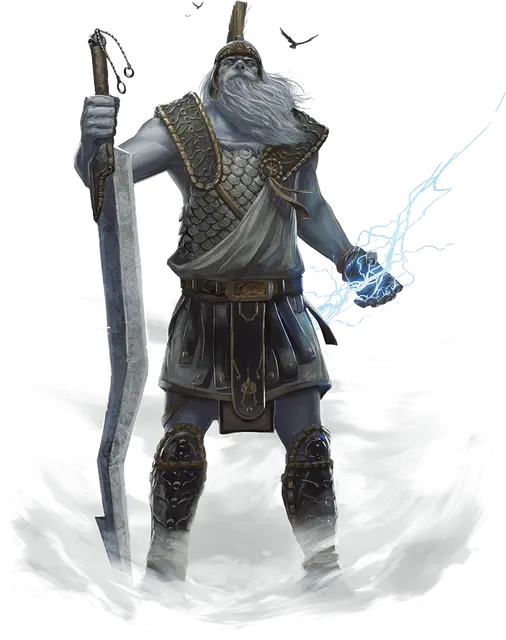

Штормовой великан
Storm Giant
Огромный Великан, хаотично-добрый

Класс Доспеха 16 (чешуйчатый доспех)
Хиты 230 (20к12 + 100)
Скорость 50 футов, плавая 50 футов
| мод | спас | ||
|---|---|---|---|
| СИЛ | 29 | +9 | +14 |
| ЛОВ | 14 | +2 | +2 |
| ТЕЛ | 20 | +5 | +10 |
| мод | спас | ||
|---|---|---|---|
| ИНТ | 16 | +3 | +3 |
| МДР | 18 | +4 | +9 |
| ХАР | 18 | +4 | +9 |
Навыки Атлетика +14, Восприятие +9, История +8, Магия +8
Сопротивление урону холод
Иммунитет к урону звук, электричество
Чувства пассивное Восприятие 19
Языки Общий, Великаний
Опасность 13 (10000 опыта)
Бонус мастерства +5
Среда обитания Побережье, Под водой
Особенности
Амфибия. Великан может дышать и воздухом и под водой.
Новые опции для великанов. Некоторые взрослые штормовые великаны могут направлять разрушительную силу сквозь своё тело и высвобождать ее с оглушительным топотом. Эта способность представлена в виде следующего действия. (Storm King's Thunder)
Оглушающий топот (Перезарядка 6). Штормовой великан топает по земле, вызывая грохот. Все существа в радиусе 15 футов от великана должны совершить спасбросок Телосложения Сл 17 или получить 33 (6к10) урона звуком и стать глухими до начала следующего хода гиганта. При успешном спасброске, существа получают половину этого урона и не оглохли. Грохот можно услышать на расстоянии до 1200 футов.
Действия
Мультиатака. Великан совершает две атаки двуручным мечом.
Двуручный меч. Рукопашная атака оружием: +14 к попаданию, досягаемость 10 футов, одна цель. Попадание: 30 (6к6 + 9) рубящего урона.
Камень. Дальнобойная атака оружием: +14 к попаданию, дистанция 60/240 футов, одна цель. Попадание: 35 (4к12 + 9) дробящего урона.
Удар молнии (перезарядка 5–6). Великан вызывает магическую молнию в точку, которую он видит в пределах 500 футов от себя. Все существа в пределах 10 футов от этой точки должны совершить спасбросок Ловкости Сл 17, получая 54 (12к8) урона электричеством при провале, или половину этого урона при успехе.
Использование заклинаний. Базовой характеристикой великана является Харизма (Сл спасброска от заклинания 17). Он может накладывать следующие заклинания, не нуждаясь в материальных компонентах:
• Неограниченно: левитация [levitate], обнаружение магии [detect magic], свет [light];
• 3/день каждое: власть над погодой [control weather] (накладывается за 1 действие), подводное дыхание [water breathing].
Описание
Штормовые великаны это задумчивые провидцы, живущие в местах, далеких от цивилизации смертных. У большинства бледный, серо-фиолетовый цвет кожи и волос, а также блестящие изумрудные глаза. Редко встречаются и штормовые великаны с фиолетовой кожей, темно-фиолетовыми или темно-синими волосами, а также серебристо-серыми или фиолетовыми глазами. Они доброжелательны и мудры, но если разозлить штормового великана, то судьбы тысяч окажутся во власти его ярости.
Далекие короли-пророки. Штормовые великаны живут в отдаленных убежищах высоко над миром или так глубоко в океанах, что большинство существ не может их достичь. Некоторые селятся в облачных замках, откуда летящий дракон кажется лишь точкой. Другие живут на горных вершинах, пронизывающих облака. Есть и те, что занимают дворцы, покрытые водорослями и кораллами на дне океана, или мрачные крепости в подводных расщелинах.
Отрешенные оракулы. Штормовые великаны помнят славу древних империй великанов, созданных богом Аннамом. Они пытаются восстановить то, что было утрачено при падении этих империй. Они не конкурируют за статус в орднунге, но свои века проживают в задумчивой изоляции, ища на звездном небе и в океанских глубинах знаки, символы и предзнаменования благословения Аннама.
Штормовые великаны видят мировые события в широкой перспективе. Они могут предсказать подъем и падение королей и империй, увидеть начало и конец удачи и несчастья, и найти связь в, казалось бы, несвязанных событиях. Читая знаки и пророчествуя, штормовые великаны изучают множество секретов, до того неизвестных, и знания, что уже позабыты.
Короли взойдут и падут, войны выиграют и проиграют, а добро и зло сойдутся в схватках. За всем этим штормовые великаны будут наблюдать, словно смертные боги на протяжении многих жизней, и им известно, что вмешиваться бессмысленно. Однако штормовой великан может добровольно раскрыть секреты доброжелательным существам, прибывших в его далекие владения с определенной целью. Такие существа должны говорить и действовать уважительно, ведь разозленный штормовой великан — сила абсолютного разрушения.
Уединенные жизни. Штормовые великаны редко общаются с сородичами. Обычно они сравнивают символы и знамения или вступают в краткие браки. Родители штормовых великанов остаются вместе, пока растет их ребенок, а затем возвращаются к любимой ими изоляции.
Некоторые культуры гуманоидов поклоняются штормовым великанам как малым богам, создавая мифы и истории о подвигах великанов и их обширных знаниях. Штормовым великаном управляет совесть, а не законы или честь. Так что штормовой великан, чей разум одолела жадность или вкус власти, легко может стать страшной угрозой.
См. дополнительно статью: "Бестиарий: Великаны"